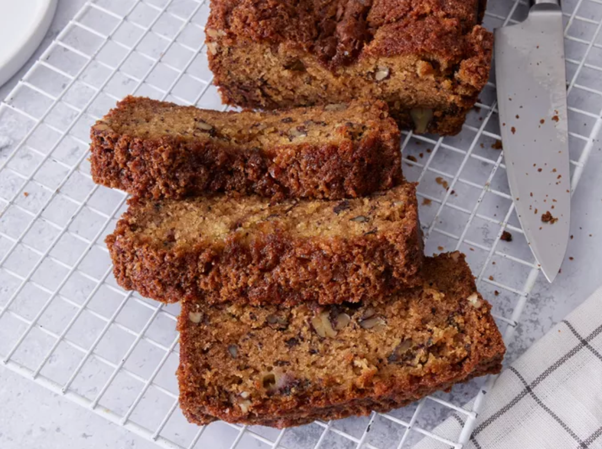

Recipes

Banana Bread
This dwarfs your recipe, this is the greatest banana bread recipe ever put on paper.
Rating: ★★☆☆☆
12 servings
Ingredients
- 2 large eggs, beaten
- 1 cup mashed bananas
- ½ cup vegetable oil
- ⅓ cup buttermilk
- 1 ¾ cups all-purpose flour
- 1 ½ cups white sugar
- 1 teaspoon baking soda
- ½ teaspoon salt
- ½ cup chopped pecans (Optional)
Preparation
- Gather all ingredients. Preheat the oven to 325 degrees F (165 degrees C). Grease a 9x5-inch loaf pan.
- Mix eggs, bananas, oil, and buttermilk together in a large bowl until well combined.
- Sift flour, sugar, baking soda, and salt into a separate large bowl.
- Stir flour mixture into the banana mixture until combined. Gently fold in pecans.
- Pour batter into the prepared loaf pan.
- Bake in the preheated oven until a toothpick inserted in the center comes out clean, 1 hour and 20 minutes.
- Cut into slices and enjoy!